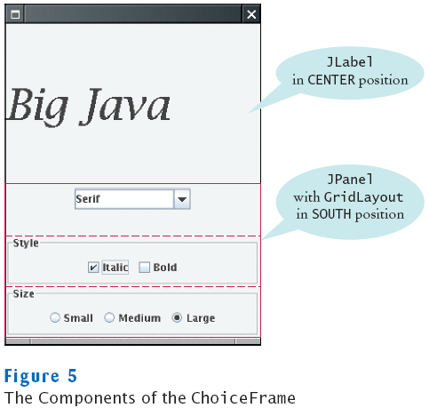

Radio Buttons, Check Boxes, and Combo Boxes
- They generate an ActionEvent whenever the user selects an item
- An example: ChoiceFrame

- All components notify the same listener object
- When user clicks on any component, we ask each component for its current content
- Then redraw text sample with the new font